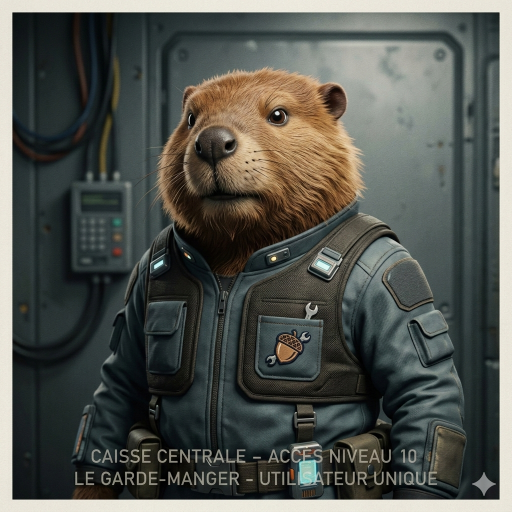
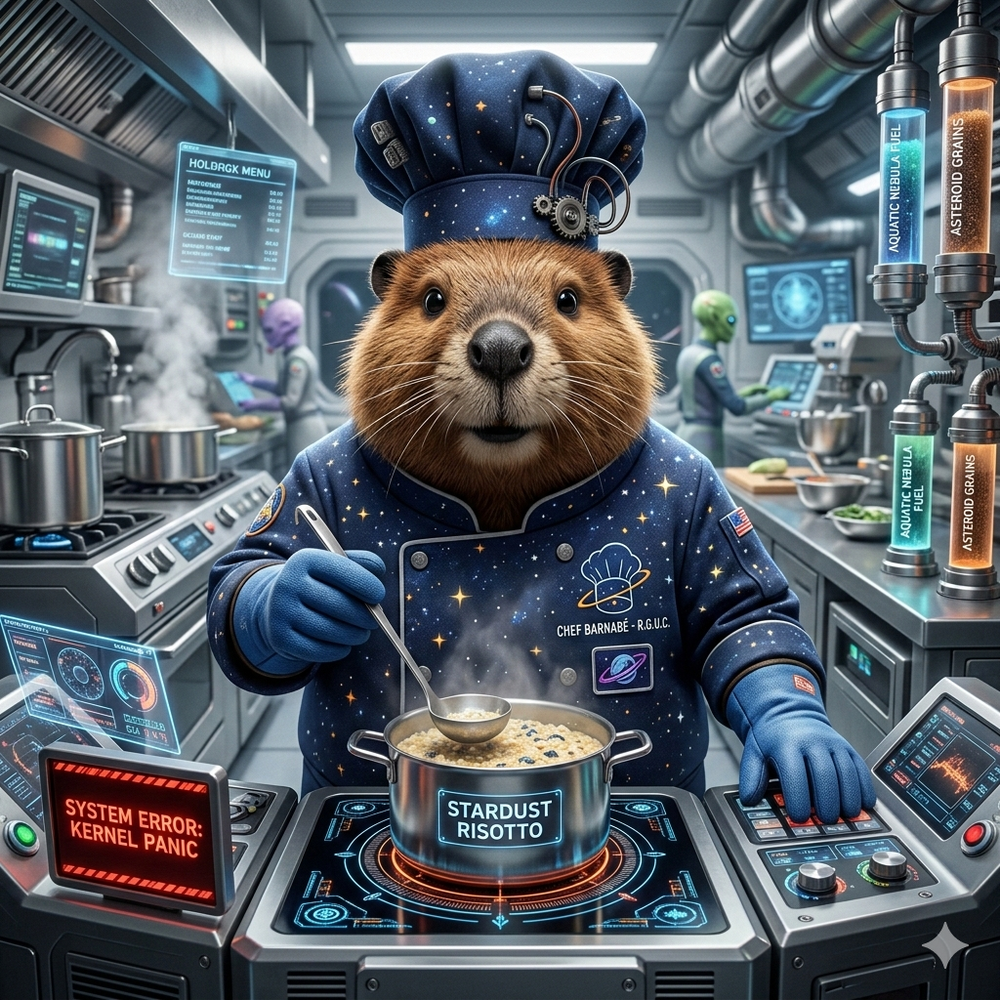
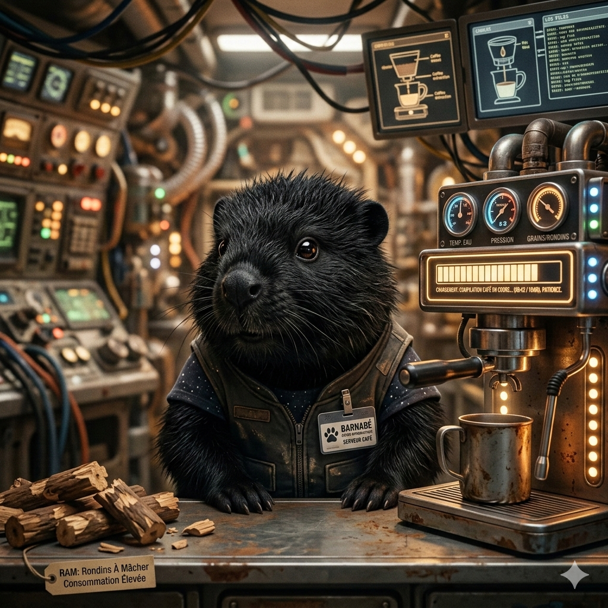
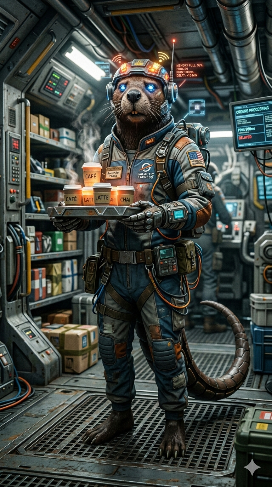
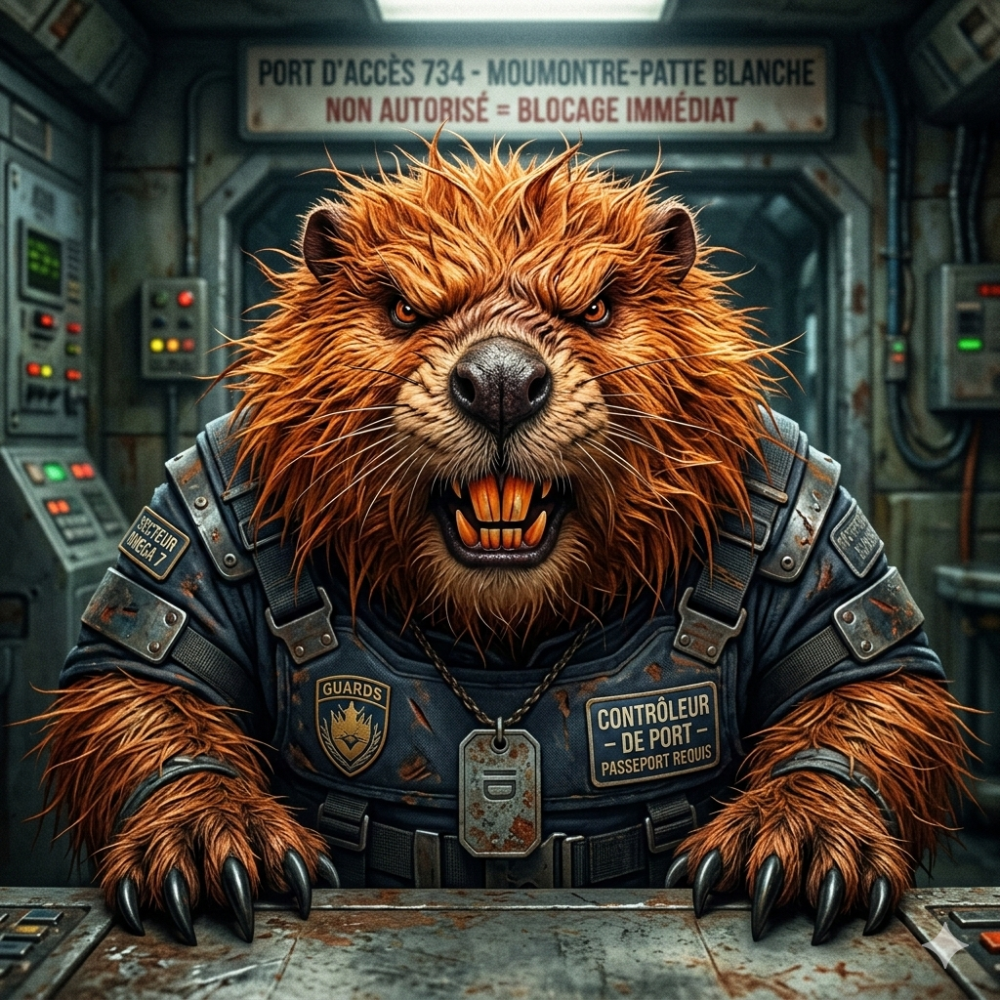

Root
Administrateur Système
Le seul possesseur du mot de passe de la caisse. S'il n'est pas là, personne ne mange. Ne lui parlez jamais de "Sudo", il le prendrait très mal : ici, c'est lui le seul super-utilisateur.
Sudo-Root
Administrateur des Protocoles de Sève
Il gère la structure du barrage et de la base de données. Ses racines s'étendent sur tout le darknet local.

Kernel
Chef de Cuisine
Il gère les ressources du barrage et la cuisson des produits. Très efficace en temps normal, mais il lui arrive de faire un "Kernel Panic" et de rester figé devant ses fourneaux pendant 5 minutes sans cligner des yeux.
Chlorophylle Kernel
Développeur de Mutations Gastronomique.
Mixe des herbes cryptées et des champignons radioactifs. Sa cuisine ne contient aucun bug, seulement des 'fonctionnalités' épicées.

Java
Spécialiste Expresso
Il prépare un café excellent, mais il faut attendre 10 minutes qu'il "compile" sa machine avant d'avoir la première goutte. Consomme énormément de RAM (Rondins À Mâcher) pour rester réveillé.
Hot-Swap Java
Ingénieur en Infusions Liquides
Capable d'injecter une dose de chlorophylle radioactive dans votre tasse sans interrompre votre conversation. Ses cocktails sont servis en 'temps réel' avec une latence proche de zéro.

Buffer
Serveur Réseau
Il stocke vos commandes en mémoire avant de les livrer. Malheureusement, sa mémoire est souvent pleine, ce qui explique pourquoi votre café arrive avec un décalage de 10 minutes (Ping : 999ms).
Buffer-Overflow-Express
Gestionnaire de Flux de Livraison
Il livre les plats par flux continu. Si la table est pleine, il crée une extension virtuelle sur vos genoux
GarbageCollector
Expert en Nettoyage
Passe de temps en temps pour supprimer les miettes de cookies inutilisées. Attention : il est parfois trop zélé et emporte votre assiette alors que vous n'aviez pas encore fini votre dernière bouchée.
Garbage-Void-Collector
Spécialiste de la Suppression Définitive
Nettoie les tables et les preuves. Ce qu'il jette dans le compost ne revient jamais, pas même sous forme de fantôme numérique.

Firewall
Responsable Sécurité
Un castor roux très colérique qui bloque tout le monde par défaut. Pour entrer, il faut montrer patte blanche et ne surtout pas essayer de passer par un port non autorisé.
Deep-Packet Firewall
Analyste de Menaces Aéroportées.
Analyse chaque client à l'entrée. Il a bloqué plus de tentatives d'intrusion que le Pentagone.